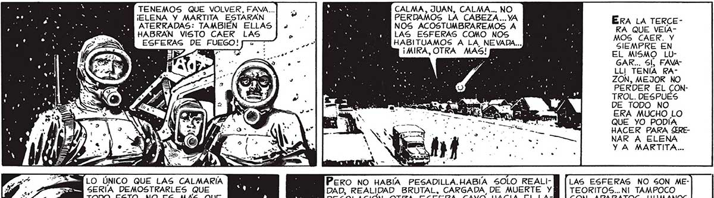
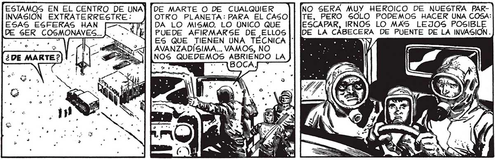

TENEMOS QUE VOLVER, FAVA... ¡ELENA Y MARTITA ESTARÁN ATERRADAS: TAMBIÉN ELLAS HABRAN VISTO CAER LAS CALMA, JUAN, CALMA... NO PERDAMOS LA CABEZA...YA " NOS ACOSTUMBRAREMOS A MN ERA LA TERCE LAS ESFERAS COMO NOS A 3 MOS CAER. Y Y HABITUAMOS A LA NEVADA... e Ie SIEMPRE EN ¡MIRA, OTRA MAS! | EL MISMO LUGAR... Sl, FAVALLI TENÍA RAZON, MEJOR NO PERDER EL CONTROL. DESPUÉS DE TODO NO ERA MUCHO LO QUE YO PODÍA HACER PARA SERENAR A ELENA Y A MARTITA... ESFERAS DE FUEGO! LAS ESFERAS NO SON METEORITOS...NI TAMPOCO GON APARATOS HUMANOS. ¿VERDAD, FAVA?2 PERO NO HABÍA PESADILLA.HABIA SOLO REALI| DAD, REALIDAD BRUTAL, CARGADA DE MUERTE Y TODO ESTO NO ES MAS QUE A DESOLACIÓN. OTRA ESFERA CAYO HACIA EL LA-] UNA E _ATROZ, UN MAL : DO DEL CENTRO. E SUEÑO. QUE LA'"NE- a IS AIRES ERE: AC 24 VADA” NO HA CAÍ- ño DO, Y QUE CASAS Y CALLES SIGUEN COMO SIEMPRE, LLENAS DE VIDA, DE RUIDOS... ASÍ ES JUAN. VIENEN DE ALGÚN OTRO MUNDO... ESTAMOS EN EL CENTRO DE UNA] [DE MARTE O DE CUALQUIER NO SERA MUY HEROICO DE NUESTRA PARINVASION EXTRATERRESTRE: OTRO PLANETA: PARA EL CASOI | lTE, PERO SOLO PODEMOS HACER UNA COSA: DA LO MISMO. LO ÚNICO QUE ESCAPAR, IRNOS LO MAS LEJOS POSIBL PUEDE AFIRMARSE DE ELLOS|| lDE LA CÁBECERA DE PUENTE DE LA INVASION. ES QUE TIENEN UNA TÉCNICA || | o AVANZADÍSIMA... VAMOS, NO | NOS QUEDEMOS ABRIENDO LA LO MISMO QUE ESTA “NEVADA” QUE MAL PRINCIPIO CREIMOS CENIZA RADIOACTIVA.. ESTAS BOLAS DE FUE- f GO CONFIRMAN LO QUE ME HACÍA SOSPECHAK EL RUIDO DE LA RADIO...

